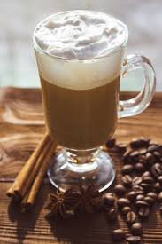
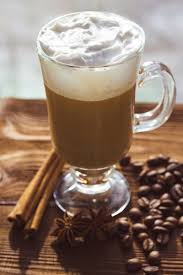
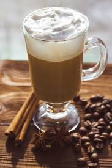

Everyone recognizes a roasted coffee bean, but you might not recognize an actual coffee plant. Coffee trees are pruned short to conserve their energy and aid in harvesting, but can grow to more than 30 feet (9 meters) high. Each tree is covered with green, waxy leaves growing opposite each other in pairs. Coffee cherries grow along the branches. Because it grows in a continuous cycle, it’s not unusual to see flowers, green fruit and ripe fruit simultaneously on a single tree.

| With milk | Without milk | Water add-on |
|---|---|---|
| Espresso | Espresso with milk | Percolated coffee |
| Americano | Macchiato | Ristretto |
| French Press Coffee | Cappuccino | Turkish Coffee |
Favourite types of coffee:
Least favourite types of coffee:
Poem about Coffee
O coffee! Doved and fragrant drink, thou drivest care away,
The object thou of that man’s wish who studies night and day.
Thou soothest him, thou giv’st him health, and God doth favor those
Who walk straight on in wisdom’s way, nor seek their own repose.
Fragrant as musk thy berry is, yet black as ink in sooth!
And he who sips thy fragrant cup can only know the truth.
Insensate they who, tasting not, yet vilify its use;
For when they thirst and seek its help, God will the gift refuse.
Oh, coffee is our wealth! for see, where’er on earth it grows,
Men live whose aims are noble, true virtues who disclose.
Would appreciate if you fill in the following form
FormIf you want to check more about coffee you can visit following webpage